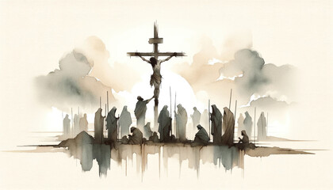

Learn the Truth about the Truth
The Resurrection of the Dead
When Jesus returns the first thing He will do is to raise His saints -- those who have died and are now sleeping in their graves; then He will change His disciples who are alive at that time. This is clearly taught to us in 1 Thessalonians 4:13-18:
“Brothers, we do not want you to be ignorant about those who fall asleep, or to grieve like the rest of men, who have no hope. We believe that Jesus died and rose again and so we believe that God will bring with Jesus those who have fallen asleep in him. According to the Lord's own word, we tell you that we who are still alive, who are left till the coming of the Lord, will certainly not precede those who have fallen asleep. For the Lord himself will come down from heaven, with a loud command, with the voice of the archangel and with the trumpet call of God, and the dead in Christ will rise first. After that, we who are still alive and are left will be caught up together with them in the clouds to meet the Lord in the air. And so we will be with the Lord forever. Therefore, encourage each other with these words.”
This wonderful scene is also referred to in Revelation 20:6:
“Blessed and holy are those who have part in the first resurrection. The second death has no power over them, but they will be priests of God and of Christ and will reign with him for a thousand years.”
Since this is a “first” resurrection, we should expect to read about one to follow. The whole world of mankind will one day experience this second resurrection. Jesus referred to this in John 5:28-29:
“...the hour is coming in which all who are in the graves will hear His voice and come forth -- those who have done good, to the resurrection of life, and those who have done evil, to the resurrection of judgment.”
Contrary to what many denominations teach, this will bring a time upon earth when all mankind has an opportunity to learn righteousness. We read of this in Isaiah 26:9:
“For when Your judgments are in the earth, the inhabitants of the world will learn righteousness.”
At that time Satan, who has blinded the minds of men in this age (1 Corinthians 4:4), will not any longer be allowed to do so. Revelation 20:1-2 tells us:
“Then I saw an angel coming down from heaven, having the key to the bottomless pit and a great chain in his hand. He laid hold of the dragon, that serpent of old, who is the Devil and Satan, and bound him for a thousand years.”
This is not a fable! The Prophets of the Old Testament spoke of it. Jesus and His Apostles preached it. In fact, Jesus said in John 3:16-17:
“For God so loved the world that He gave His only begotten Son, that whoever believes in Him should not perish but have everlasting life. For God did not send His Son into the world to condemn the world, but that the world through Him might be saved.”
There will be a time, in the near future, when God will establish His Kingdom on this earth in which we live, and set up Jesus as its King and Ruler. We can be very confident that God’s Word is sure, and it will accomplish what it promises. Isaiah 55:11 says:
“So is My word that goes out from My mouth: It will not return to Me empty, but will accomplish what I desire and achieve the purpose for which I sent it.”
Yes, God has a definite purpose for which Jesus died on Calvary’s Cross to redeem all mankind from the penalty of sin and death that came upon us when Adam sinned in the Garden of Eden. Paul tells us in 1 Timothy 2:5-6:
“For there is one God and one mediator between God and men, the man Christ Jesus, who gave himself as a ransom for all men -- the testimony to be given in its proper time.”
Yes, Jesus’ death and resurrection leads to the fulfillment of God’s promise to Abraham that “in you and your seed (Jesus) all mankind will be blessed” (Genesis 12:1-2). The following beautifully describes what will be accomplished in this glorious coming Kingdom.
A Preview Of The Finished Kingdom
“Close your eyes for a moment to the scenes of misery and woe, degradation and sorrow that yet prevail on account of sin, and picture before your mental vision the glory of the perfect earth. Not a stain of sin mars the harmony and peace of a perfect society; not a bitter thought, not an unkind look or word; love, welling up from every heart, meets a kindred response in every other heart, and benevolence marks every act. There sickness shall be no more; not an ache nor a pain, nor any evidence of decay -- not even the fear of such things. Think of all the pictures of comparative health and beauty of human form and feature that you have ever seen and know that perfect humanity will be of still surpassing loveliness. The inward purity and mental and moral perfection will stamp and glorify every radiant countenance. Such will earth’s society be; and weeping bereaved ones will have all their tears wiped away, when thus they realize the resurrection work complete.”
“Then I saw a new heaven and a new earth; for the first heaven and the first earth passed away, and there is no longer any sea. And I saw the holy city, new Jerusalem, coming down out of heaven from God, prepared as a bride adorned for her husband. And I heard a loud voice from the throne, saying, ‘Behold, the tabernacle of God is among the people, and He will dwell among them, and they shall be His people, and God Himself will be among them, and He will wipe away every tear from their eyes; and there will no longer be any death; there will no longer be any mourning, or crying, or pain; the first things have passed away.’
And He who sits on the throne said, ‘Behold, I am making all things new.’ And He said, ‘Write, for these words are faithful and true.’” — Revelation 21:1-5
Immortality
How common is the teaching that we all have immortal souls? What does "immortal" mean? This belief or doctrine is probably believed by almost all Christian churches and is not uncommon in some of the non-Christian religions. The teaching of reincarnation is an example pertaining to the latter.
Let us first define the word immortal. It means a condition of life that is death-proof, or unable to die, and therefore exists forever. Someone who possesses immortality is not dependent on outside sources for life. He has life within himself. Note carefully the words of Jesus in John 5:26:
"For as the Father has life in Himself, so He has given the Son to have life in Himself." This is telling us that God possesses immortality, but note that Jesus didn't always have it for it was given to Him by His Father.
Read also 1 Timothy 6:17 and Romans 1:23.
Let us now look at 1 Timothy 6:15-16:
"Which He will manifest in His own time, He who is the blessed and only Potentate, the King of kings and Lord of lords, who alone has immortality, dwelling in unapproachable light, whom no man has seen or can see, to whom be honor and everlasting power. Amen."
If the "King of kings and Lord of lords" alone has immortality, how can it be said that all mankind were born with an immortal soul?
If everyone ever born possessed immortality, it would mean that anyone God created would be beyond His control or power to destroy even if there was a just cause for doing so. Why would an all-wise God put Himself in such a position? Logic alone tells us that He would not.
One more Scripture which affirms that indeed God is able to destroy the soul is Matthew 10:28:
"And fear not them which kill the body, but are not able to kill the soul: but rather fear Him (God) who is able to destroy both soul and body in hell (gehenna — second death)."
The Lie in the Garden
The doctrine or teaching of the immortality of the soul came from the mouth of the father of lies, Satan himself (John 8:44). We read that God said to Adam and Eve in Genesis 2:17, "But you must not eat from the tree of the knowledge of good and evil, for when you eat of it you will surely die." But Satan tempted Eve not to believe God. We read in Genesis 3:2-4:
"The woman said to the serpent, 'We may eat fruit from the trees in the garden, but God did say, "You must not eat fruit from the tree that is in the middle of the garden, and you must not touch it, or you will die."' 'You will not surely die,' the serpent said to the woman."
This lie is the basis for the teaching, among both Christian and heathen, that the soul of a person cannot ever die but must live on in some form or other. In essence Satan's lie says that God Himself lied to our first parents when He said they would die. God did not say that only a part of them would die and that another part would not. No, God plainly stated, "You will surely die." In time, that is just what happened.

The question is then before us, who is it that we believe — God or Satan? Ponder the words of God found in Isaiah 55:11:
"So is my Word that goes out from my mouth; it will not return to me empty, but will accomplish what I desire, and achieve the purpose for which I sent it."
Unfortunately, many Christians have chosen to believe Satan, since they teach that the soul is immortal.
What Does the Word of God Say?
There is nothing in the Word of God that states man was created immortal. On the contrary, we find just the opposite. The Prophet stated, quite plainly, in Ezekiel 18:4:
"For every living soul belongs to me, the father as well as the son — both alike belong to me. The soul who sins is the one who will die."
In Ezekiel 18:20 he says again:
"The soul who sins is the one who will die."
The word immortality is not found in the Old Testament.
Summary
Summary: Immortality is not something that is possessed at birth but is a reward to the faithful followers of Jesus at their resurrection. Mortality is something we possess at birth, inherited by being part of Adam's race, and thus because of his sin we will die. However, according to God's plan, He will raise up mankind from the grave and provide him an opportunity to live eternally as a mortal being upon earth under righteous conditions. Heart obedience to the laws of righteousness will be the requirements to receive this life.
Want to know more? Go to CDMI.org and click on "Do you have an immortal soul?"

The Ransom for All
As In Adam All Die
“Therefore, just as sin entered the world through one man, and death through sin, and in this way death came to all men, because all have sinned.” (Rom 5:12). The “one man” the Apostle Paul is mentioning is the first man, Adam. He was created perfect; and when he sinned, he lost not only his perfection, but also his right to everlasting life. Adam’s sin and the death penalty that resulted because of it were passed down to and through all his descendants. Everybody throughout history has died because of Adam’s sin.
In Christ Shall All Be Made Alive
“For if, by the trespass of the one man, death reigned through that one man, how much more will those who receive God’s abundant provision of grace and of the gift of righteousness reign in life through the one man, Jesus Christ. Consequently, just as the result of one trespass was condemnation for all men, so also the result of one act of righteousness was justification that brings life for all men” (Rom. 5:17,18). “For as in Adam all die, even so in Christ shall all be made alive” (1 Cor. 15:22).
We ask you to notice the two great opposites that are contrasted in these texts: DEATH through Adam, and LIFE through Jesus Christ. You will find these two great opposites contrasted throughout the Bible. Death is the penalty that has been passed down from Adam ever since he sinned through disobedience and lost his home in Eden. Christ, however, having conquered death, now offers us everlasting life. Everybody who has lived and died since Adam has died because of Adam’s sin; but these statements by the Apostle Paul truly offer a real hope for all mankind. Because of Jesus Christ and His sacrifice, the hope of everlasting life is given to all. “So then as through one trespass the judgment came unto all men to condemnation; even so through one act of righteousness the free gift came unto all men to justification of life” (Rom. 5:17, 18 - ASV)
A Ransom
“For there is one God and one mediator between God and men, the man Christ Jesus; who gave himself a ransom for all, to be testified in due time” (1 Tim. 2:5, 6).
In order to properly understand the Bible, we must not only read its verses, but we must also know the meaning of the words found in the verses. Please read this text again and think about the meaning of all the words found in it. What does the word ransom mean to you? It is a corresponding price (according to Young’s concordance) that must be paid before what was lost or taken away can be returned. Think for a moment what it was that our Lord’s life, offered as a sacrifice, corresponded to. It was the price required by God’s justice.
You may recall that after Adam and Eve sinned, they not only lost their human perfection, but they also began the dying process immediately because of their sin. (See Gen. 3:1-4, 6-7, 19, 23-24.) Sin and its penalty of death were passed down throughout all generations. (See Rom.5:12 & Ezek.18:4.) The sacrifices of ancient Israel were used to “cover” the sins of the people from year to year but never really took away or removed their sin. This was because the life of animals was not the price required to redeem the perfect human life of Adam that he lost in Eden. God’s just law required something of equal value to Adam’s perfection, in order to remove sin and death from humanity and bring back what was lost. Thus, only a perfect human being, free of sin, could pay the price as a sacrifice for the human perfection that was lost in Eden. A ransom needed to be paid (a price to correspond)--a perfect human life for a perfect human life. God’s Only Begotten Son left the glory He had with the Father; He “emptied himself” (Phil. 2:7 NRSV) of all the glory and the rights that belonged to Him as a heavenly being to became a man. He was, therefore, that corresponding price, and able to offer His life as a ransom for that which Adam had lost, not only for himself but for all in his loins. The perfect human life of Jesus, sacrificed on Calvary’s Cross, was therefore acceptable to God. We know this because the Father raised Him from the dead. Where mankind once had death in Adam, he now has life extended to him in Christ.
Jesus, a Ransom for All
It is our hope that you noticed the word ALL when you read 1 Tim. 2:5, 6 mentioned earlier, and that you realize Jesus did indeed give himself “a ransom for all.” What does the word all mean to you?
There are many amazing promises in the Bible which include a hope for all the people now living, in addition to all who have ever lived or who will ever live on this planet. If we leave anyone out of these promises, it cannot be said that Jesus died for “all.” We have already quoted Rom. 5:17, 18. Please open your Bible and read those verses again to refresh your memory. Notice how they tell us that all mankind has been dying ever since Eden because of sin passed down through all generations. Verse 18 says, however, that because of Christ’s sacrifice, “the free gift came upon all men unto justification of life.” It should be clear from this statement that everybody everywhere must have the opportunity of accepting Christ for their salvation. The Apostle Paul did not say this opportunity was presented just to the people presently living. The promise was made by God himself and is for every descendant of Adam who ever lived or will live on this earth.
“....Fear not: for behold, I bring you good tidings of great joy, which shall be to all people” (Luke 2:10). Who is included in the “all people” prophesied by the angel of the Lord in this verse? If Jesus did indeed die as a ransom for all, as clearly stated in 1 Tim. 2;5-6, shouldn’t all people have the opportunity of sharing in the great joy of our Lord’s life and death as Savior of all mankind? Should they not also have a chance to benefit from it? John the Baptist, forerunner of Christ, said, as he saw Jesus approaching the River Jordan, “...Behold! The Lamb of God, who takes away the sin of the world” (John 1:29)! Notice how John said Jesus would take away, not merely cover, everyone’s sin. Jesus own words were, “But I, when I am lifted up from the earth, will draw all men to myself” (John 12:32). Think for a moment how it would be possible for Jesus to draw everyone, even those who had already died before he made that statement. “But we see Jesus, who was made a little lower than the angels, now crowned with glory and honor because he suffered death, so that by the grace of God he might taste death for everyone” (Hebrews 2:9).
“The Scripture foresaw that God would justify the Gentiles by faith, and announced the gospel in advance to Abraham: “All nations will be blessed through you” (Gal. 3:8). (Comp. to Gen.12:3 and 22:18.) Notice how even Gentiles can be justified by faith in Christ’s sacrifice! Jesus Christ is the true “seed” of Abraham through whom all nations will be blessed (Gal. 3:16). He tasted death for every man and has taken away the sins of the world. To date, very few people who have ever lived have benefited from our Lord’s sacrifice. Even so, God’s promises, as recorded in the preceding verses, will one day be carried out. It is recorded in 1 John 2:2 that Jesus did not die only for the sins of His Church, but also for the sins of the whole world.
God’s Love For All
Our God is not just the God of one small group of people. Our God is the God of the entire world and the Creator of everyone who lives on it. All humanity was lost through sin and suffered the same penalty of death, regardless of what country they lived in or when they lived, or who they believed in. Therefore, all humanity must have the opportunity to become free from sin and death.
God is Love (1 Jn. 4:8,16), and His love extends to all. He has a plan whereby everyone who has ever lived, in the past, present or future will have the opportunity of gaining everlasting life. When we realize the magnitude of God’s love for all His creation, we are lost in wonder, love, and praise! “O the depth of the riches both of the wisdom and the knowledge of God! How unsearchable are His judgments, and His ways past tracing out” (Rom. 11:33 - ASV)!
Far too often, the motto of people in various religions is poetically expressed like this: “God bless me and my wife, my son John and his wife, us four and no more.” Thank God for His assurance that His coming blessings will not be for just a few! Yes, indeed, God’s grace and blessings will exceed the boundaries of nations, religions, races, and time! They will spread to every part of the earth in His due time!
Benefit of the Ransom to the Church
Jesus offered His perfect life not only for the sins of the Church, but also for the sins of the whole world (1 John 2:2). But each in his own order and time. Not all are being called to a high-calling by God at this present time. The people of the world will have their opportunity of being blessed through our Lord Jesus Christ and His faithful Church. We know that not all of earth’s billions now living or who have ever lived have been called by God to understand the true gospel message or shown the road of discipleship. In fact, throughout history, only a small number of people have even heard the name of Jesus Christ, the ONLY name under heaven by which we might be saved (Acts 4:12). “For to you is the promise, and to your children, and to all that are afar off, even as many as the Lord our God shall call unto him” (Acts 2:39 - ASV). This verse bears out the point we are making. The Lord is doing the calling. Not everyone is now being called.
A Called out Church
“Church” is translated from the Greek word ekklesia, which means “a calling out,” or “those called out.” The Church is composed of members of Christ’s body who have been called out of the world by God. Paul states that these called-out ones are to “be conformed to the image of God’s dear Son” (Rom. 8:28, 29). According to 2 Peter 1:4, individual members of the Church have escaped the corruption that is in the world. Those who remain in the world have not escaped this corruption, but only as many as God has called and who have accepted the call. 2 Cor. 4:4 tells us how “the god (Satan) of this world has blinded the minds of them which believe not.” Those who have been called by God and who have accepted the call, however, have been enlightened regarding God’s truth through His Holy Spirit.
Called In One Hope
“For we were all baptized with one Spirit into one body--whether Jews or Greeks, slave or free--and we were all given the one Spirit to drink” (1 Cor. 12:13). Yes, both the Jewish and Gentile believers shared in the one and same hope in which God is calling us. We read in Ex. 19:4-6, Deut. 14:2, Deut. 26:18-19 and Psa. 135:4 how God promised ancient Israel that if they obeyed Him, they would become a “treasured possession . . . a kingdom of priests and a holy nation.” By rejecting our Lord Jesus Christ, most of the Jews failed to acquire these promises from God.
Jesus stated in Matt. 21:43 that after the Jews rejected Him, God’s promise to them would then be offered to the Gentiles. In Romans 11:17, Paul presented a picture of the Gentile converts as the “wild olive shoot” being “grafted in” among the Jews who had remained faithful. Those Gentiles replaced the “broken branches,” the Jews who had rejected Jesus. Gentiles who are grafted into the Israelite “tree” become as the tree itself, true spiritual Israelites in the full meaning of the word. With this in mind, consider the following text from 1 Peter 2:9, 10 which was written to the Gentiles: “But you are a chosen people, a royal priesthood, a holy nation, a people belonging to God, that you may declare the praises of him who called you out of darkness into his wonderful light. Once you were not a people, but now you are the people of God; once you had not received mercy, but now you have received mercy.” Notice the similarity of the titles given to the Gentiles with the titles previously given to ancient Israel. Also please notice how Peter used the word called in this text, keeping in mind that the word church means “called out.” It was the Jews who were first called out by God; now the Gentiles are also being called out of the world. Eph. 4:4 declares that there is one body and one spirit, and that those who are being called are called in one hope.
Called to Reign With Christ
Are you beginning to understand the hope in which the Church is called? It is not the destiny of the Church that they merely become an inactive group of believers, after they are joined with Christ. Rather, their future purpose is to be a “royal priesthood.” “Do you not know that the saints will judge the world? And if you are to judge the world, are you not competent to judge trivial cases” (1 Cor. 6:2)? Do you see the magnitude of God’s promise to the Church in this verse? From it will come the overcoming body of saints -- true believers, both Jew and Gentile, who will one day with Jesus judge the whole world in righteousness. “To him who overcomes, I will give the right to sit with me on my throne, just as I overcame and sat down with my Father on his throne” (Rev. 3:21). One who sits on a throne is reigning; this the glorified saints will be doing after they obtain their crowns. “To him who overcomes and does my will to the end, I will give authority over the nations--He will rule them with an iron scepter; he will dash them to pieces like pottery -- just as I have received authority from my Father” (Rev. 2:26, 27). We can see here how they also will have authority and power.
“You have made them to be a kingdom and priests to serve our God, and they will reign on the earth” (Rev. 5:10). These texts given in 12 through 14 show very clearly the future work of those of the Church who make their “calling and election sure” (2 Pet. 1:10). They will become “a kingdom of priests” who will “judge the world,” having “authority over the nations” and they will “reign on the earth.”
In Rev. 7:4-8, God’s ruling family is pictured as coming from the 12 tribes of Israel. We become true Israelites upon our full acceptance of Christ Jesus and obedience to Him. “And if ye be Christ’s, then are ye Abraham’s seed, and heirs according to the promise” (Gal. 3:29). 1 Cor. 12:13 bears repeating here: “For we were all baptized by one Spirit into one body--whether Jews or Greeks, slave or free--and we were all given the one Spirit to drink.” We have presented a much different picture of what God’s purpose is for the saints than what most churches believe and teach. The Bible clearly shows that the saints will reign with God’s Son on earth for l000 years (Rev. 20:6). So many people have no idea at all what they will be doing if they are fortunate enough to go to heaven, except that they will be with Jesus. What God has called them for is so much more! Yes, the plans God has for the Church who will be united with their Lord are almost beyond comprehension! It is our hope that you also will be guided by God’s Holy Spirit to see the blessed truth we cherish so dearly.
Want to know more? Visit CDMI.org — Online Booklets.
"There is one God, and one mediator between God and men, the man Christ Jesus."— 1 Timothy 2:5
God is eternal, without beginning or end, and possesses inherent immortality alone. He is the Father of Jesus Christ and the creator of the universe. God is characterized by attributes including pure love and light.
Our fellowship is dedicated to studying and understanding the character and plan of God as revealed in the Holy Scriptures. We believe that through diligent study of God's Word, we can come to know Him more fully and understand His purpose for mankind.
The Word Hell
Hell is a word that is found 54 times in the King James Version of the Bible. Many churches believe that hell is a place of torturous suffering in literal, unquenchable fire where the unsaved and wicked go after they die, remaining there forever, with no hope of release. Others believe that hell is a place where the unsaved and wicked go after death and will experience eternal separation from God.
Most believe that saved Christians go directly to heaven at their death. Others believe all will be saved, if not now, then in the future Kingdom of God, whose King will be the Lord Jesus Christ.
Catholics added an interim place where most Catholics go to have their sins purged before they can reach heaven. This place, called Purgatory, is also a place of suffering, but only temporary. They believe sainted Catholics alone go directly to heaven when they die.
Non-Christian religions have their own teachings of what happens after death, such as being reincarnated into another form or being, and many other concepts too numerous to consider in this article.
Let us now consider what the Bible says on our subject. First, we need to understand what God said is the penalty for sin. In Gen. 2:16 we read, "And the LORD God commanded the man, 'You are free to eat from any tree in the garden; but you must not eat from the tree of the knowledge of good and evil, for when you eat of it you will surely die.'"
God said clearly, the penalty for sin was death! If there was to be such a place of eternal suffering or separation, God would have clearly spoken it to Adam. It would be grossly unjust of God not to tell them about it at the time He gave them His warning. Since God is completely just and righteous, this point must be strongly considered for the proper understanding of our topic.
The penalty for sin is simply that life ceases, which is death. Adam and Eve, after they sinned, eventually died — they ceased to exist. This death penalty was then passed on to all their posterity, as Romans 5:12 clearly states: "...just as sin entered the world through one man (Adam), and death through sin, and in this way death came to all men, because all have sinned."
Job had a true understanding of the brevity of life and what follows. In Job 14:1-2 he said, "Man, born of woman, is of few days and full of trouble. He springs up like a flower and withers away; like a fleeting shadow, he does not endure."
But Job also believed that there would be a resurrection of the dead in God's due time. Job 14:10-14 says, "But man dies and is laid low; he breathes his last and is no more. As water disappears from the sea or a riverbed becomes parched and dry, so man lies down and does not rise; till the heavens are no more, men will not awake or be roused from their sleep. If only you would hide me in the grave and conceal me till your anger has passed! If only you would set me a time and then remember me! If a man dies, will he live again? All the days of my hard service I will wait for my renewal to come."
The Book of Ecclesiastes offers us more enlightenment about the condition of the dead. Ecclesiastes 9:5, 10: "For the living know that they will die, but the dead know nothing; they have no further reward, and even the memory of them is forgotten.... Whatever your hand finds to do, do it with all your might, for in the grave, where you are going, there is neither working, nor planning, nor knowledge, nor wisdom." Clearly, we are told death is the cessation of life, and those who die rest in their graves until the resurrection.
Since the body ceases to live at death, is there such a thing as a separate immortal soul which lives on? This doctrine of the immortality of the soul is a prominent teaching of most Christian churches and many non-Christian religions. Yet this term is not found in the Scriptures.
In Matthew 10:28 Jesus says to His disciples, "Do not be afraid of those who kill the body but cannot kill the soul. Rather, be afraid of the One who can destroy both soul and body in hell." Note that Jesus states clearly that the soul can be destroyed by God, and since this is the case, it cannot be immortal. The body and the soul cease to exist or live at death when it enters the grave. Ezekiel 18:20 says clearly, "The soul who sins shall die."
Let us go to the first mention of the word soul in the Bible. In Genesis 2:7 we read, "And the LORD God formed man of the dust of the ground and breathed into his nostrils the breath of life; and man became a living soul." Since Adam became a living soul when God breathed into him the breath of life, it is logical to conclude that when that breath of life is withdrawn, the person becomes a dead soul.
Hell in the Old Testament
The Old Testament was written in Hebrew and uses the word sheol. In the King James Version, sheol is translated grave 31 times, hell 31 times, and pit 3 times. Translations are often biased, depending on the translators. In the American Standard Version of 1901, the Revised Standard Version, and the New Revised Standard, translators recognized this pitfall and left the word sheol untranslated 63 times. The New King James Bible left it untranslated 18 times.
Since this problem exists in most translations, we must be cautious in considering the context to get the proper understanding. Where it would not make sense for translators to render the word sheol as hell, they interpreted it as grave or pit. Please read: 1 Samuel 2:6; Job 14:13; Hosea 13:14; Psalm 49:14-15; Psalm 30:3.
Let us now look at some texts translating sheol as hell. Psalm 18:4-5: "The sorrows of death compassed me, and the floods of ungodly men made me afraid. The sorrows of hell compassed me about: the snares of death prevented me" (KJV). David — who the Scriptures say was "a man after God's own heart" (Acts 13:22) — had no fear of going to a fiery hell, because he knew that when he died he would be in the grave until the resurrection.
Later in life, he stated in Psalm 88:3, "For my soul is full of troubles: and my life draws nigh unto the grave" (KJV). This confirms that the true translation of Psalm 18:4-5 above should be grave. The NAS, NIV, and others also render sheol as grave and not hell.
Let us look at one more text, found in Ezekiel 31:15-17: "Thus saith the Lord GOD; In the day when he went down to the grave I caused a mourning: I covered the deep for him, and I restrained the floods thereof, and the great waters were stayed: and I caused Lebanon to mourn for him, and all the trees of the field fainted for him. I made the nations to shake at the sound of his fall, when I cast him down to hell with them that descend into the pit: and all the trees of Eden, the choice and best of Lebanon, all that drink water, shall be comforted in the nether parts of the earth. They also went down into hell with him unto them that be slain with the sword; and they that were his arm, that dwelt under his shadow in the midst of the heathen" (KJV). Both times where the word hell and the one rendered grave are used, they come from the Hebrew word sheol. In an unbiased translation all three would be rendered as grave.
The "hell-fire" doctrine, so often attributed to God, where unsaved souls shall experience excruciating pain and suffering forever, is an abomination in the sight of God. Jeremiah 32:35 states: "And they built the high places of Baal, which are in the valley of the son of Hinnom, to cause their sons and their daughters to pass through the fire unto Molech; which I commanded them not, neither came it into my mind, that they should do this abomination, to cause Judah to sin" (KJV). If God condemned this type of torturous sacrifice and said such a thing never even entered His mind, how can any believe that He invented a place called hell where unsaved souls would be tortured forever with no hope for it to end?
Hell in the New Testament
The New Testament was written in Greek and uses the word hades. In the American Standard Version of 1901, the Revised Standard, and the New Revised Standard, hades is left untranslated 10 times; in the New King James Version, 11 times; and in the New International, 5 times. Again, since this problem exists in most translations, we must carefully consider the context to get the proper understanding.
Acts 2:27 quotes from Psalm 16:10: "Because you will not leave my soul in hell, neither will you suffer your Holy One to see corruption" (KJV). If hell was a place that one was condemned to forever, why would David say that God will not leave his soul in hell? It was because David knew of the resurrection of the dead and thus knew God would not leave his soul in the grave forever because of God's promise of a Savior.
Jesus, speaking in Rev. 1:18, says, "I am He that lives and was dead and, behold, I am alive for evermore, Amen; and have the keys of hell and of death" (KJV). Jesus truly died and was in the tomb (grave) for three days, then God raised Him up to life (Acts 2:32). Romans 14:9 says, "For this very reason, Christ died and returned to life, so that he might be the Lord of both the dead and the living" (NIV). Jesus will be Lord over the resurrected dead in his coming Kingdom, for all that are in their graves shall hear His voice and come forth (John 5:28-29).
The Meaning of Gehenna
What about the word Gehenna, also translated as hell? Gehenna, according to the reputable McClintock and Strong Cyclopedia, was a place in the Valley of Hinnom which is a little south of Jerusalem. "It became the common lay-stall of the city, where the dead bodies of criminals, and the carcasses of animals, and every other kind of filth was cast. From the depth and narrowness of the gorge, and perhaps its ever-burning fires, as well as it being the receptacle of all sorts of putrefying matter and all that defiled the Holy City, it became in later times the image of the place of everlasting punishment."
It is important to note that nothing alive was cast into this gorge — only dead bodies of criminals and animals. Nothing suffered in it. Whatever was cast into it was totally destroyed in the ever-burning fires. Jesus, when referring to Gehenna, used it as a symbol of total destruction, of that which passed into oblivion to be seen no more. Men later put their own interpretation on Gehenna and then associated it with their hell-fire teachings.
Matthew 5:29 uses the Greek word Gehenna, but the KJV and many others render it hell: "And if your right eye offend you, pluck it out, and cast it from you: for it is profitable for you that one of your members should perish and not that your whole body be cast into hell (Gehenna)" (KJV). Jesus uses the word perish, which means to stop existing. So Jesus is saying that it is better for one offending body member to perish than for the eventuality of the whole body perishing. Jesus used the word Gehenna to symbolize total destruction, knowing that anything in it was always destroyed.
We read in Genesis 3:19 that a person's body returns to dust at death. Mark 9:43-48 repeats Matt. 5:29-30, but there it is also stated that worms are found in hell (Gehenna). Mark was referring to Isaiah 66:24, where the Prophet had referred to the dead bodies in the Valley of Hinnom. As long as it contained something combustible, the fire kept burning, and as long as the fires left something there for the worms to eat, they did not die out. However, if you go there today, you will not see either fire or worms! In Job 17, worms are associated with the corruption of the grave, and Job 24:19 states that the grave will consume the sinners. Gehenna infers destruction and death for all wicked.
In Luke 12:4-5, our Lord tells us, "I tell you, my friends, do not be afraid of those who kill the body and after that can do no more. But I will show you whom you should fear: Fear Him who, after the killing of the body, has power to throw you into hell (Gehenna); fear him" (NIV). Jesus was saying we should never fear man who can only kill the body, but we are to fear God, who is able to cast us into Gehenna — total destruction, annihilation. When a man is killed by another man, his eternal existence is not jeopardized. However, the wicked, whom God considers incorrigible, will be everlastingly destroyed. That is what is meant when they are cast into Gehenna.
We have only listed some of the Scriptures where Gehenna is rendered as hell in the KJV. In all others, the meaning of Gehenna remains the same. It is a symbol of total destruction and not eternal torture.
Another Greek word, which appears only in 2 Peter 2:4, is translated "cast them down to hell" in the KJV. It is the verb tartaroo, from the Greek mythological Tartaros, and describes the incarceration of disobedient angels who are kept there as they await their judgment. There again, the word hell was a poor translation of the Greek word.
— CBF